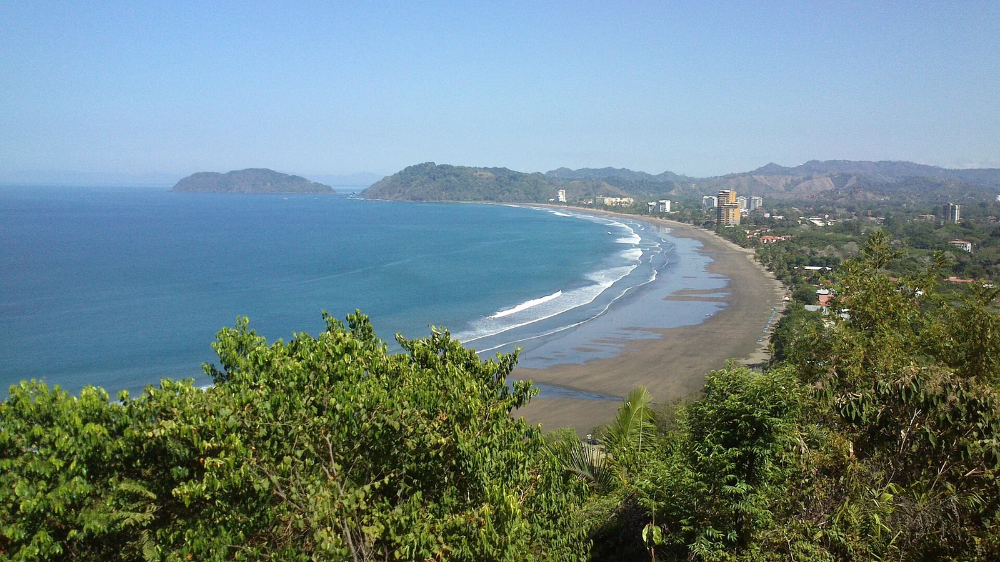

Playa Jacó
Puntarenas, Costa Rica · surf

Une plage de surf au cœur d’une station de la côte Pacifique. Jacó offre une base pour explorer le littoral central.
- Lieu
- Puntarenas, Costa Rica
- Niveau
- Variable selon les conditions
- Activités
- surf
- Type d'eau
- Mer / océan
- Coordonnées
- 9.61, -84.63 (position approximative du secteur)
Ouvrir dans Ocean Buddy Télécharger sur l'App Store
Source : Visit Costa Rica.